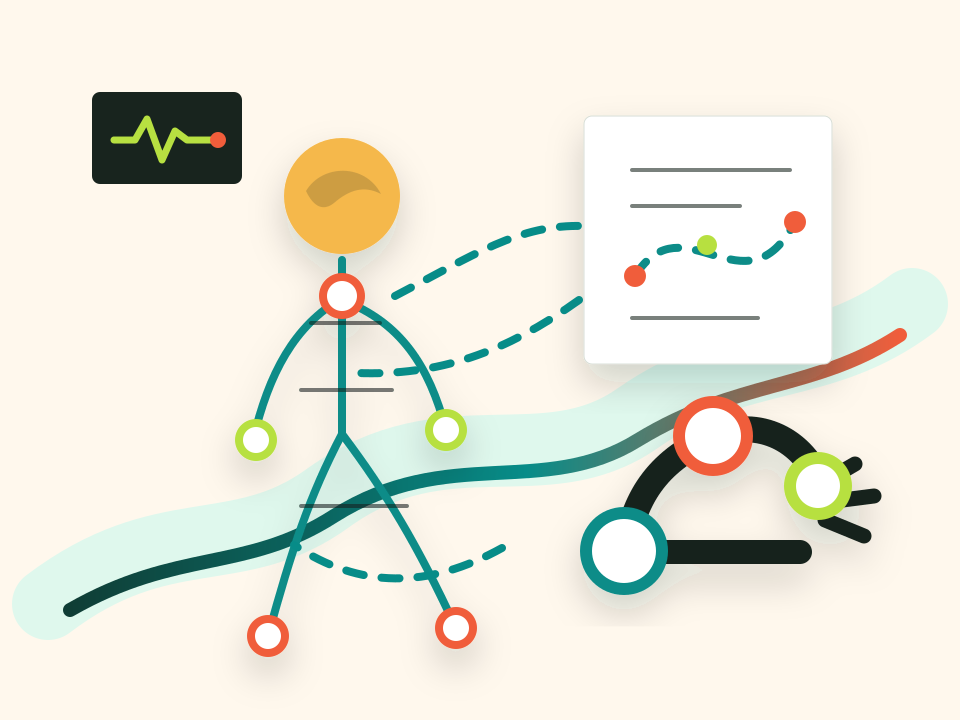

Rehabilitation robots that fit real homes
Modular, approachable systems for upper-limb therapy after stroke, designed around daily life rather than perfect lab conditions.
Biomedical engineering meets active life
I am building toward technologies that stay close to the body: wearable sensors, rehabilitation robots, and human-in-the-loop intelligence that help people move, recover, remember, train, and remain independent for as long as possible.
North star
Superhuman, to me, does not mean replacing the human. It means protecting the human.
I am fascinated by the integration of hardware, software, and biology: systems that can augment what we do well, support what is weakening, and help us keep choosing our own adventures.
My long-term goal is deeply personal and deeply scientific: to help people preserve independence, cognition, strength, mobility, and confidence until the end of life.

Research interests, but written as a design brief for a life: technologies that help people recover after injury, optimize performance today, and compensate gracefully as the body and brain change with age.
Modular, approachable systems for upper-limb therapy after stroke, designed around daily life rather than perfect lab conditions.
Sensors that turn movement, fatigue, effort, and recovery into feedback people can actually use while training, working, or exploring outdoors.
Assistive systems that support memory, planning, and confidence, especially when aging or neurological disease threatens independence.
Adaptive systems that learn from human goals, physiology, and context while leaving the user in command.
Tools that make rehabilitation, monitoring, coaching, and support available where life actually happens.
A future where people can keep hiking, skiing, racing, learning, remembering, and moving with dignity for as long as possible.
The same core idea can serve different seasons of life: optimize, rehabilitate, and compensate without surrendering identity or freedom.
Use sensing, feedback, and coaching to improve movement, endurance, learning, recovery, and awareness.
Build rehabilitation tools that are motivating, measurable, personalized, and usable beyond the hospital.
When decline arrives, use technology to preserve agency: memory support, mobility support, confidence, and independence.

At the edge of land in Skagen, Denmark, where two seas meet. A useful reminder that the best engineering often lives at boundaries too.
Life outside the lab
I love being outdoors and active. Hiking, skiing, triathlon, and long days in motion are not side notes to the research. They are part of why the work matters.
The dream is not eternal life. The dream is an independent, capable, curious life: a body that can still move, a mind that can still remember, and tools that help us keep doing what makes life feel like ours.
I like conversations about rehabilitation robotics, sensors, human augmentation, entrepreneurship, endurance training, books, and the weirdly beautiful places where those things overlap.